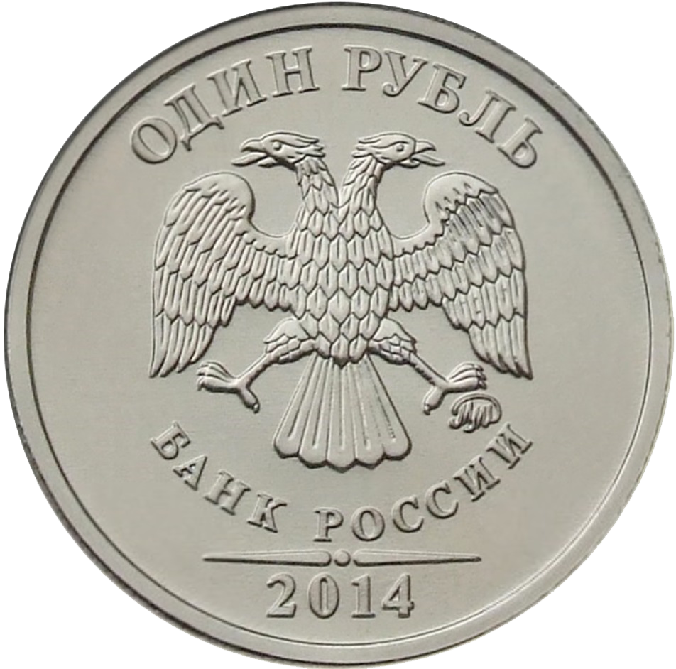

Государственные символы России
Государственные символы России — установленные федеральными конституционными законами особые отличительные знаки России, олицетворяющие её национальный суверенитет и самобытность, несущие определённый идеологический смысл. Таковыми символами являются: государственный флаг, герб и гимн.
Государственный герб России

Государственный герб Российской Федерации представляет собой четырёхугольный, с закруглёнными нижними углами, заострённый в оконечности красный геральдический щит с золотым двуглавым орлом, поднявшим вверх расправленные крылья. Орёл увенчан двумя малыми
Государственный флаг России

Государственный флаг — это опознавательный знак государства, исполняет ту же функцию, что и государственный герб, государственный гимн и название страны, — он обозначает свою страну, отличает её от других стран.
Флаг России описан как «прямоугольное полотнище из трёх равновеликих горизонтальных полос: верхней — белого, средней — синего и нижней — красного цвета. Отношение ширины флага к его длине — 2:3» . Оттенки цветов не были установлены, потому что Федеральный конституционный закон о Государственном флаге Российской Федерации оттенки цветов не устанавливаеть.

Использование флага России
Порядок использования государственного флага определяется Федеральным законом. Законом описаны случаи, в которых флаг должен использоваться обязательно: он помещается на зданиях, в которых располагаются органы власти (Президент Российской Федерации, Федеральное Собрание, правительство, федеральные министерства и ведомства и их отделения, органы власти субъектов Российской Федерации — республик, краев, областей, автономных округов, органы местного самоуправления муниципальных образований — городов, районов и сельских поселений), в рабочих кабинетах руководителей органов власти, на зданиях представительств России за рубежом, на российских кораблях и судах. Российский флаг каждый день поднимается в воинских частях нашей армии. Флаг изображается на воздушных судах (самолётах и вертолётах), российских космических аппаратах. В дни праздников и важных событий государственный флаг украшает улицы и площади. Закон устанавливает случаи, когда и кем флаг должен использоваться обязательно. Существуют три основных способа применения флагов: флаг может быть поднят, вывешен (установлен) или растянут. Существует ещё немало тонкостей в правилах использования флагов, общий свод которых называется флажным протоколом.
Государственный гимн России
Государственный гимн Российской Федерации представляет собой песню, музыку к которой написал композитор А. В. Александров, а слова — поэт С. В. Михалков. Сама музыка и основа текста были позаимствованы из гимна Советского Союза.
Гимн имеет три куплета, после которых трижды исполняется припев. Гимн может звучать со словами или без слов — оба исполнения являются равноценными. При исполнении гимна без слов обыкновенно звучат только первый куплет и припев.
Текст гимна Российской Федерации
Россия — священная наша держава,
Россия — любимая наша страна.
Могучая воля, великая слава —
Твоё достоянье на все времена!
Славься, Отечество наше свободное,
Братских народов союз вековой,
Предками данная мудрость народная!
Славься, страна! Мы гордимся тобой!
От южных морей до полярного края
Раскинулись наши леса и поля.
Одна ты на свете! Одна ты такая —
Хранимая Богом родная земля!
Славься, Отечество наше свободное,
Братских народов союз вековой,
Предками данная мудрость народная!
Славься, страна! Мы гордимся тобой!
Широкий простор для мечты и для жизни
Грядущие нам открывают года.
Нам силу даёт наша верность Отчизне.
Так было, так есть и так будет всегда!
Славься, Отечество наше свободное,
Братских народов союз вековой,
Предками данная мудрость народная!
Славься, страна! Мы гордимся тобой!
Гимн России инструментал
Гимн России хор
Символ Российского рубля ₽
Символ или знак российского рубля (₽) — типографский знак, который входит в группу «Знаки валют» (англ. Currency Symbols) стандарта Юникод и называется «Символ рубля» (англ. Ruble sign); код — U+20BD. Используется, главным образом, для представления национальной валюты Российской Федерации — рубля.
Характерные знаки, имеющие это назначение: р. • руб. • ₽ . Кроме того, для краткого представления российского рубля используются коды стандарта ISO 4217: с 1998 года RUB и 643, ранее RUR и 810.
Начертание
Символ «₽» был утверждён в качестве официального знака российского рубля советом директоров Банка России 11 декабря 2013 года. Как отмечено в официальном сообщении Банка России об утверждении символа, «графическое обозначение рубля в виде знака представляет собой прописную букву „Р“ кириллического алфавита, дополненную в нижней части горизонтальной чертой, создающей впечатление присутствия двух параллельных линий, что символизирует устойчивое положение российского рубля».
Использование символа

Символ «₽» используется, главным образом, для представления национальной валюты Российской Федерации — рубля.
Этот знак был утверждён Центральным банком Российской Федерации 11 декабря 2013 года в соответствии с одной из его функций, установленной в 4-й статье Федерального закона «О Центральном банке Российской Федерации (Банке России)». Выбор знака был произведён из пяти вариантов по итогам интернет-опроса, проведённого на сайте банка с 5 ноября по 5 декабря 2013 года. В предложении о включении символа в стандарт Юникод, которое было подготовлено специалистами Банка России, отмечалось, что выбранный знак уже несколько лет использовался в деловом обороте, а его официальное утверждение должно ускорить широкое распространение знака во внутрироссийском и международном банковских сообществах. Кроме того, сообщалось, что уже в 2014 году Банк России планирует поместить знак на некоторые разновидности монет, а в будущем использовать его и в оформлении банкнот.
Символ рубля на монетах
Такие монеты были выпущены в обращение 17 июня 2014 года: памятные монеты из серебра номиналом 3 рубля, а также монеты из стали с никелевым гальваническим покрытием номиналом 1 рубль. Серебряные монеты выпущены ограниченным тиражом: с качеством «пруф» 500 штук, качеством «анциркулейтед» 1000 штук. Монеты достоинством 1 рубль выпускаются в рамках эмиссионной программы тиражом 100 миллионов штук.
Символ рубля в компьютерах
На момент принятия символ неофициально использовался много лет, однако в Юникоде его не было: консорциум ждал официального принятия. Шрифтовые дизайнеры ставили символ рубля в нескольких незадействованных позициях Юникода, надеясь, что рано или поздно в одной из них знак всё же утвердят; за это время в позиции 20B916 появилась индийская рупия и в 20BA — турецкая лира. Многие сайты использовали типографские трюки через CSS или подключали специальный шрифт со знаком рубля.
Когда символ рубля официально приняли, в Юникоде нашли похожую на него армянскую букву «ке» (Ք, 055416). Консорциум даже попросил не использовать эту букву.
21 января 2014 года российским техническим комитетом по стандартизации «Информационные технологии» (ТК22), который является российским национальным рабочим органом СТК1 ИСО/МЭК, была подана заявка в Технический комитет «Юникод» на добавление символа рубля — 20BD16 Ruble Sign (₽) — в набор символов Unicode. 4 февраля 2014 года на 138 заседании Технического комитета «Юникод» в Сан-Хосе на основании этой заявки было принято решение о включении символа рубля в стандарт Unicode версии 7.0, и этот знак появился в Юникоде 7.0, выпущенном 16 июня 2014 года.
Отображение символа рубля зависит от версий файлов шрифтов, установленных на персональном компьютере пользователя. Даже если на сервере шрифты его содержат, у внешнего пользователя версия может быть без символа и отображения не будет, или будет отображаться глиф из другого шрифта.